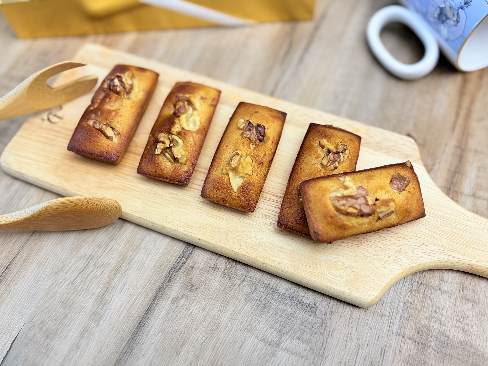
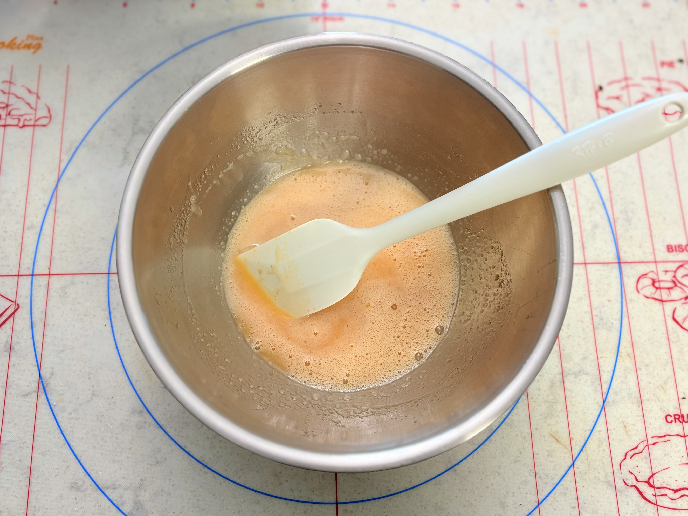
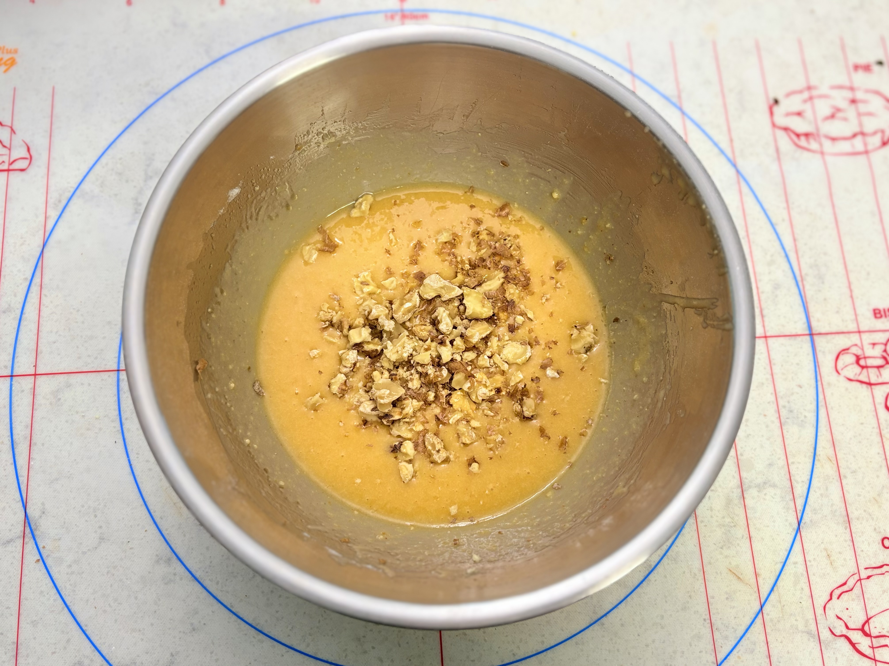
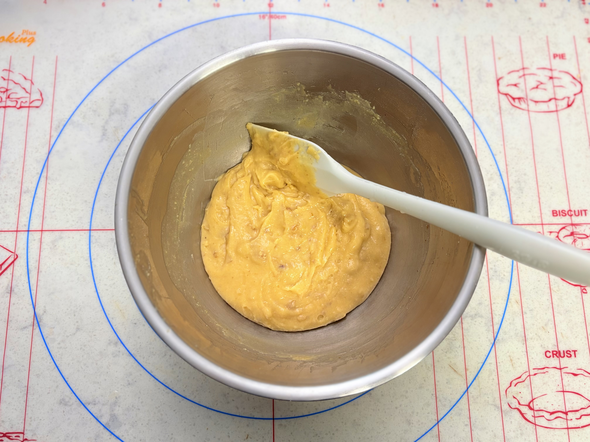
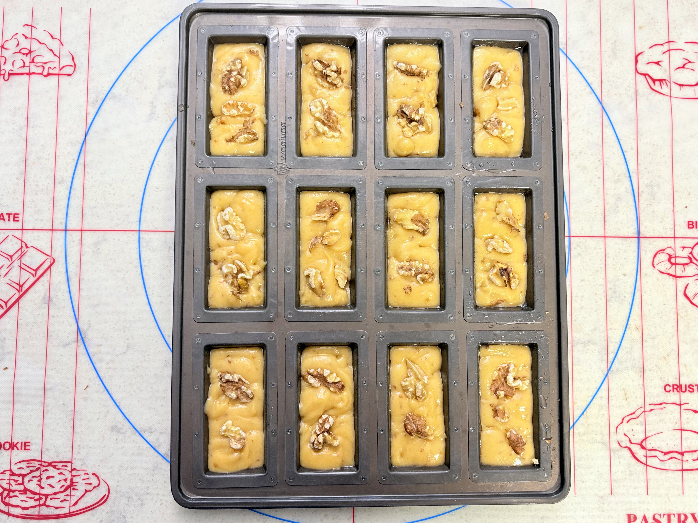
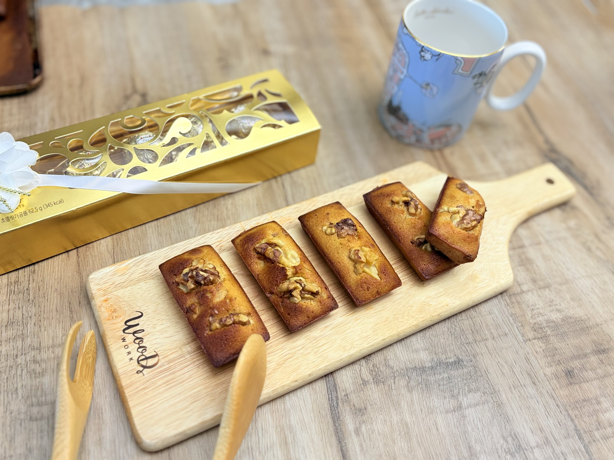
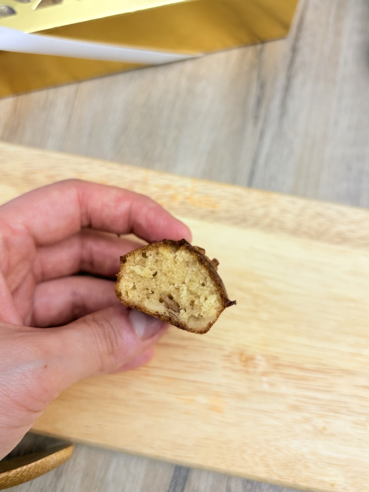
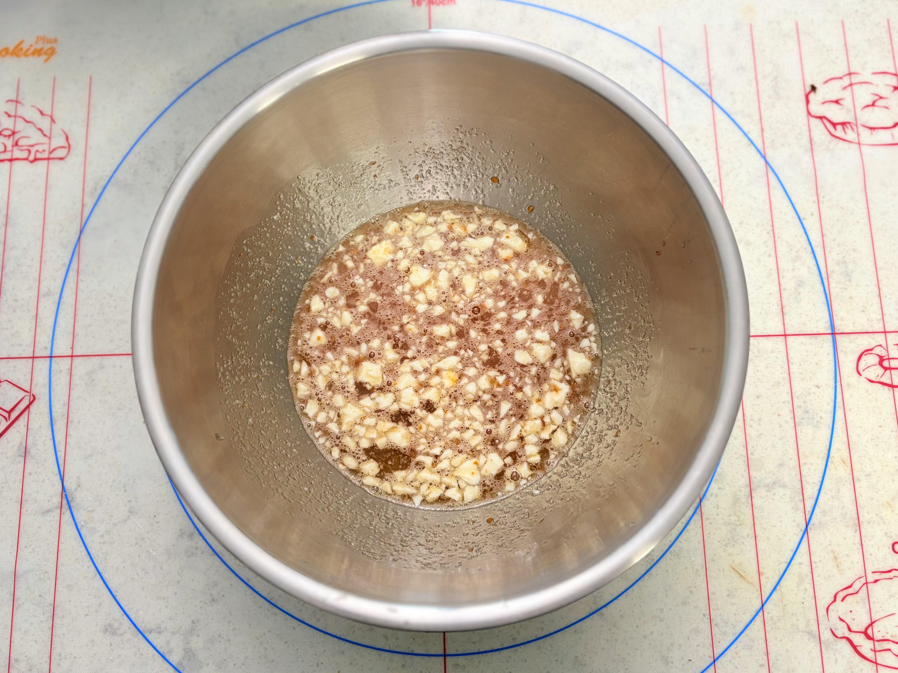

단짠의 미학,
인생 휘낭시에
태운 브라운버터의 고소하고 짙은 향기에
쌈장의 짭조름한 깊은 감칠맛이 녹아들어 매혹적인 하모니를 이룹니다.

순두부와
고소한 호두분태
물기 살짝 뺀 순두부를 넣어 내부 수분을 단단히 사수하고,
반죽 안과 겉면에 올린 호두분태가 바삭하게 씹히며 고소한 조화를 완성합니다.

Step 01.
브라운 버터 끓이기
버터를 약불에 은근하게 태워 헤이즐넛 같은 풍미가 돌도록 끓입니다.
체에 걸러 맑고 고소한 브라운 버터만 추출해 식혀둡니다.

Step 02.
단짠 베이스 혼합
달걀 흰자 베이스에 설탕, 꿀, 그리고 감칠맛을 더할 쌈장 12g,
으깬 순두부 30g을 넣어 믹서로 가볍고 균일하게 블렌딩해 줍니다.

Step 03.
가루 및 버터 결합
아몬드가루와 강력분을 체 쳐 넣어 가볍게 날가루를 섞은 후,
식혀둔 브라운 버터를 3회에 걸쳐 부으며 매끄러운 윤기가 날 때까지 섞습니다.

Step 04.
냉장 휴지의 힘
반죽을 냉장실에 넣어 최소 1시간(가능하면 하룻밤) 휴지시킵니다.
글루텐이 안정화되고 버터가 다시 굳어 겉면이 바삭하게 고정됩니다.

Step 05.
고온 베이킹
반죽을 80% 가량 틀에 채운 뒤 호두를 토핑해 200℃ 예열 오븐에 넣습니다.
온도를 190℃로 내려 14분간 신속하게 구워내 식힙니다.

전통과 서양 베이킹의 운명적인 조우
풍부한 헤이즐넛 풍미의 버터에 단짠 쌈장과 순두부의 고수분이 만나
겉은 바삭하고 속은 쫀득하게 물드는 기분 좋은 감동입니다.